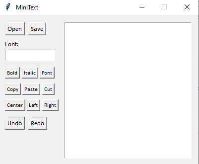

Before starting my way in webdev, I tried making some simple Python apps,
and these is the "Making Of" of one of them.
"Clock" is just a simple clock app that I made in an afternoon.
To start, MiniText is a really small and simple text editor.
I made it with the idea of using it in digital classes.
I wanted to made it as a 'final' Python project to prove how much I've learnt.
On the way, everything was quite smooth,
I could solve almost every single problem thas appeared.
Then, I tried publishing it on Itch.io, but I couldn't make the executable.
And finally, 8 months after that, I tried re-making my first app, a clock, all by myself.
The result? I simply couldn't.
